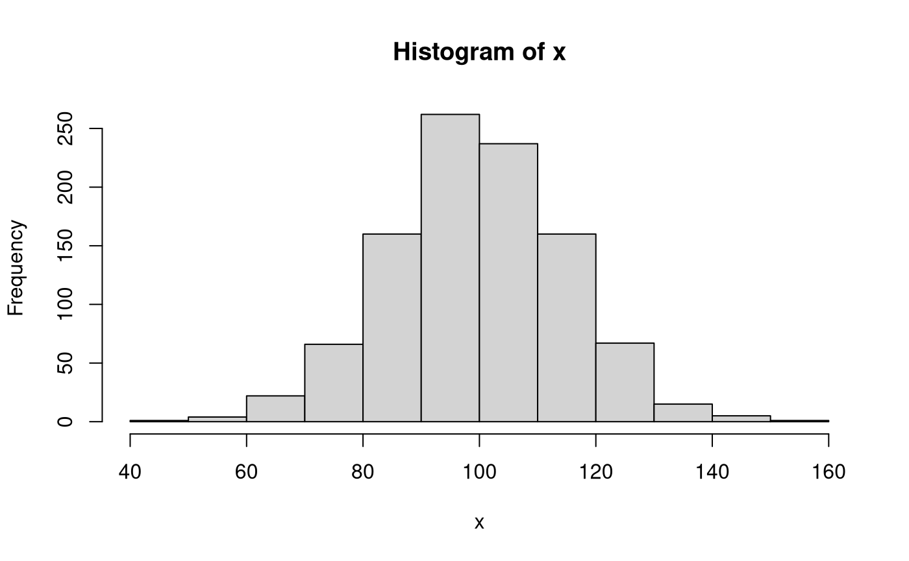
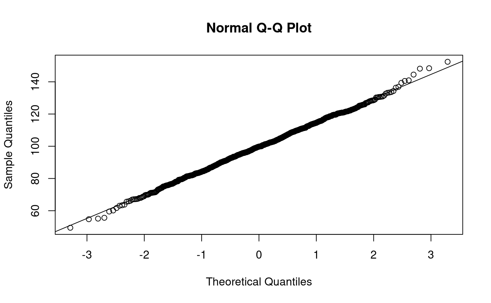
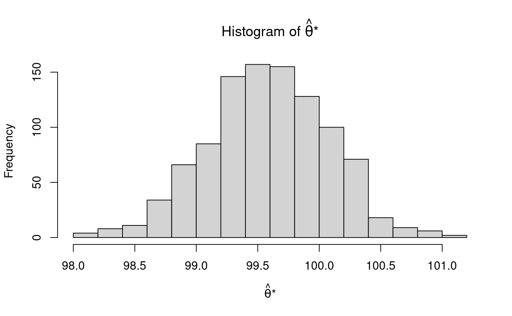
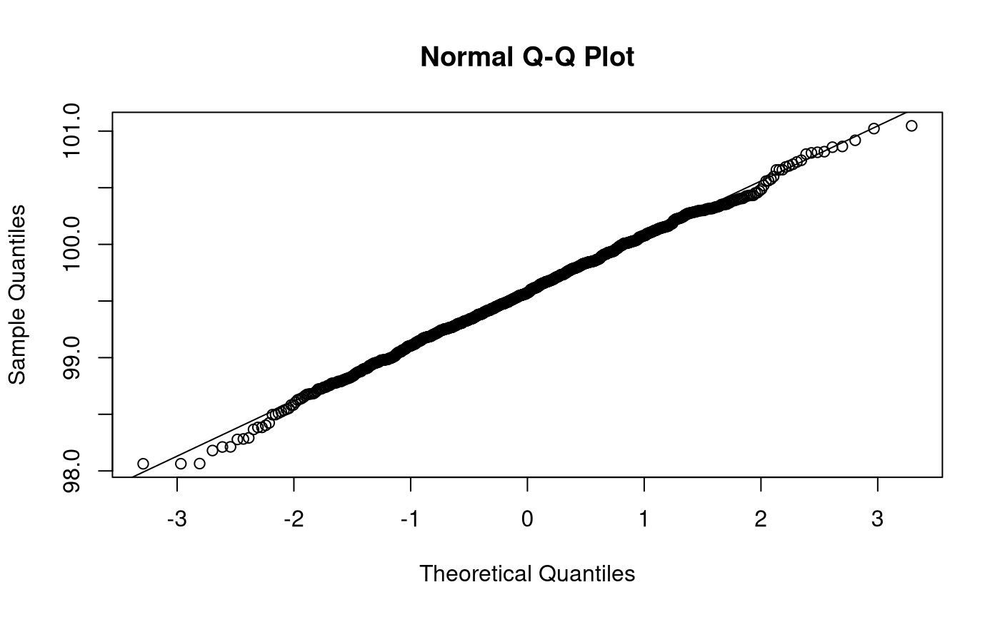

vignettes/notes/notes_intro_nb.Rmd
notes_intro_nb.Rmdlibrary(jeksterslabRboot)
Let \(X\) be a random variable from a normal distribution with \(\mu = 100\) and \(\sigma^2 = 225\).
\[\begin{equation} X \sim \mathcal{N} \left( \mu = 100, \sigma^2 = 225 \right) \end{equation}\]
This data generating function is referred to as \(F\).
| Variable | Description | Notation | Value |
|---|---|---|---|
mu |
Population mean. | \(\mu\) | 100 |
sigma2 |
Population variance. | \(\sigma^2\) | 225 |
sigma |
Population standard deviation. | \(\sigma\) | 15 |
For a sample size of \(n = 1000\), if the parameter of interest \(\theta\) is the mean \(\mu\), using the know parameters, the variance of the sampling distribution of the mean is
\[\begin{equation} \mathrm{Var} \left( \hat{\mu} \right) = \frac{ \sigma^2 } { n } = 0.225 \end{equation}\]
and the standard error of the mean is
\[\begin{equation} \mathrm{se} \left( \hat{\mu} \right) = \frac{ \sigma } { \sqrt{n} } = 0.4743416 \end{equation}\]
| Variable | Description | Notation | Value |
|---|---|---|---|
n |
Sample size. | \(n\) | 1000.0000000 |
theta |
Population mean. | \(\theta = \mu\) | 100.0000000 |
var_thetahat |
Variance of the sampling distribution of the mean. | \(\mathrm{Var} \left( \hat{\theta} \right) = \frac{ \sigma^2 }{n}\) | 0.2250000 |
se_thetahat |
Standard error of the mean. | \(\mathrm{se} \left( \hat{\theta} \right) = \frac{ \sigma }{\sqrt{n}}\) | 0.4743416 |
Let \(\mathbf{x}\) be a vector of length \(n = 1000\) of realizations of the random variable \(X\). Each observation \(i\) is independently sampled from the normal distribution with \(\mu = 100\) and \(\sigma^2 = 225\).
\[\begin{equation} \mathbf{x} = \begin{bmatrix} x_1 = X \left( \omega_1 \right) \\ x_2 = X \left( \omega_2 \right) \\ x_3 = X \left( \omega_3 \right) \\ x_i = X \left( \omega_i \right) \\ \vdots \\ x_n = X \left( \omega_n \right) \end{bmatrix}, \\ i = \left\{ 1, 2, 3, \dots, n \right\} \end{equation}\]
This is accommplished in R using the rnorm() function with the following arguments n = 1000, mean = 100, and sd = 15. rnorm() returns a vector of length n.
We can calculate sample statistics using the sample data \(\mathbf{x}\). Note that a hat (^) indicates that the quantity is an estimate of the parameter using sample data.
| Variable | Description | Notation | Value |
|---|---|---|---|
n |
Sample size. | \(n\) | 1000.0000000 |
thetahat |
Sample mean. | \(\hat{\theta} = \hat{\mu} = \frac{1}{n} \sum_{i = 1}^{n} x_i\) | 99.6126336 |
sigma2hat |
Sample variance. | \(\hat{\sigma}^2 = \frac{1}{n - 1} \sum_{i = 1}^{n} \left( x_i - \hat{\mu} \right)^2\) | 226.1359868 |
sigmahat |
Sample standard deviation. | \(\hat{\sigma} = \sqrt{\frac{1}{n - 1} \sum_{i = 1}^{n} \left( x_i - \hat{\mu} \right)^2}\) | 15.0378186 |
varhat_thetahat |
Estimate of the variance of the sampling distribution of the mean. | \(\widehat{\mathrm{Var}} \left( \hat{\theta} \right) = \frac{ \hat{\sigma}^2 }{n}\) | 0.2261360 |
sehat_thetahat |
Estimate of the standard error of the mean. | \(\widehat{\mathrm{se}} \left( \hat{\theta} \right) = \frac{ \hat{\sigma} }{\sqrt{n}}\) | 0.4755376 |

\(\mathbf{x}\) which is a vector of realizations of the random variable \(X\) is used in bootstrapping. This sample data is referred to as the empirical distribution \(\hat{F}\).
In nonparametric bootstrapping, the empirical distribution \(\hat{F}\) is resampled \(B\) number of times (1000 in the current example) with replacement.
\(\mathbf{x}^{*}\) is a set of \(B\) bootstrap samples.
\[\begin{equation} \mathbf{x}^{*} = \begin{bmatrix} \mathbf{x}^{*1} = \left\{ x^{*1}_{1}, x^{*1}_{2}, x^{*1}_{3}, x^{*1}_{i}, \dots, x^{*1}_{n} \right\} \\ \mathbf{x}^{*2} = \left\{ x^{*2}_{1}, x^{*2}_{2}, x^{*2}_{3}, x^{*2}_{i}, \dots, x^{*2}_{n} \right\} \\ \mathbf{x}^{*3} = \left\{ x^{*3}_{1}, x^{*3}_{2}, x^{*3}_{3}, x^{*3}_{i}, \dots, x^{*3}_{n} \right\} \\ \mathbf{x}^{*b} = \left\{ x^{*b}_{1}, x^{*b}_{2}, x^{*b}_{3}, x^{*b}_{i}, \dots, x^{*b}_{n} \right\} \\ \vdots \\ \mathbf{x}^{*B} = \left\{ x^{*B}_{1}, x^{*B}_{2}, x^{*B}_{3}, x^{*B}_{i}, \dots, x^{*B}_{n} \right\} \end{bmatrix}, \\ b = \left\{ 1, 2, 3, \dots, B \right\}, \\ i = \left\{ 1, 2, 3, \dots, n \right\} \end{equation}\]
The function nb() from the jeksterslabRboot package can be used to generate B nonparametric bootstrap samples. The argument data takes in a vector, matrix, or data frame. data is the empirical distribution \(\hat{F}\). In the example below, we use x, which is the sample data above, as the argument data. The argument B takes an integer. B is the number of bootstrap samples B = 1000 in our case. Optional arguments include par which is a logical argument to enable the use of multiple cores and ncores which is the number of cores to use. The nb() function returns a list of length B bootstrap samples. \(x^{*}\) is saved as x_star.
x_star <- nb( data = x, B = B ) str(x_star, list.len = 6) #> List of 1000 #> $ : num [1:1000] 128.4 119.5 115.2 75.8 116.4 ... #> $ : num [1:1000] 110.9 94.6 113.5 98.4 78 ... #> $ : num [1:1000] 121.7 81.9 89.1 90.8 82.2 ... #> $ : num [1:1000] 96.7 55.1 102.4 89.1 104.1 ... #> $ : num [1:1000] 110 84.5 84.2 105.6 88.8 ... #> $ : num [1:1000] 92.5 83.3 95.9 100.7 96.1 ... #> [list output truncated]
The parameter is estimated for each of the \(B\) bootstrap samples. For example, if we are interested in making inferences about the mean, we calculate the sample statistic (\(\mathrm{s}\)), that is, the sample mean, for each element of \(\mathbf{x}^{*}\). The \(B\) estimated parameters form the bootstrap sampling distribution \(\boldsymbol{\hat{\theta}^{*}}\).
\[\begin{equation} \boldsymbol{\hat{\theta}^{*}} = \begin{bmatrix} \hat{\theta}^{*} \left( 1 \right) = \mathrm{s} \left( \mathbf{x}^{*1} \right) \\ \hat{\theta}^{*} \left( 2 \right) = \mathrm{s} \left( \mathbf{x}^{*2} \right) \\ \hat{\theta}^{*} \left( 3 \right) = \mathrm{s} \left( \mathbf{x}^{*3} \right) \\ \hat{\theta}^{*} \left( b \right) = \mathrm{s} \left( \mathbf{x}^{*b} \right) \\ \vdots \\ \hat{\theta}^{*} \left( B \right) = \mathrm{s} \left( \mathbf{x}^{*B} \right) \end{bmatrix}, \\ b = \left\{ 1, 2, 3, \dots, B \right\} \end{equation}\]
sapply is a useful tool in R to apply a function to each element of a list. In our case, we apply the function mean() to each element of the list x_star. sapply simplifies the output when possible. In our case, sapply returns a vector, thetahat_star. The *apply functions as well as their parallel counterparts (e.g., parSapply) can be used to simplify repetitive tasks.
thetahat_star <- sapply( X = x_star, FUN = mean ) str(thetahat_star) #> num [1:1000] 100.5 99.5 99.4 99.8 100 ...

The estimated bootstrap standard error is given by
\[\begin{equation} \widehat{\mathrm{se}}_{\mathrm{B}} \left( \hat{\theta} \right) = \sqrt{ \frac{1}{B - 1} \sum_{b = 1}^{B} \left[ \hat{\theta}^{*} \left( b \right) - \hat{\theta}^{*} \left( \cdot \right) \right]^2 } = 0.4879561 \end{equation}\]
where
\[\begin{equation} \hat{\theta}^{*} \left( \cdot \right) = \frac{1}{B} \sum_{b = 1}^{B} \hat{\theta}^{*} \left( b \right) = 99.5814296 . \end{equation}\]
Note that \(\widehat{\mathrm{se}}_{\mathrm{B}} \left( \hat{\theta} \right)\) is the standard deviation of \(\boldsymbol{\hat{\theta}^{*}}\) and \(\hat{\theta}^{*} \left( \cdot \right)\) is the mean of \(\boldsymbol{\hat{\theta}^{*}}\) .
| Variable | Description | Notation | Value |
|---|---|---|---|
B |
Number of bootstrap samples. | \(B\) | 1000.0000000 |
mean_thetahat_star |
Mean of \(B\) sample means. | \(\hat{\theta}^{*} \left( \cdot \right) = \frac{1}{B} \sum_{b = 1}^{B} \hat{\theta}^{*} \left( b \right)\) | 99.5814296 |
var_thetahat_star |
Variance of \(B\) sample means. | \(\widehat{\mathrm{Var}}_{\mathrm{B}} \left( \hat{\theta} \right) = \frac{1}{B - 1} \sum_{b = 1}^{B} \left[ \hat{\theta}^{*} \left( b \right) - \hat{\theta}^{*} \left( \cdot \right) \right]^2\) | 0.2381012 |
sd_thetahat_star |
Standard deviation of \(B\) sample means. | \(\widehat{\mathrm{se}}_{\mathrm{B}} \left( \hat{\theta} \right) = \sqrt{ \frac{1}{B - 1} \sum_{b = 1}^{B} \left[ \hat{\theta}^{*} \left( b \right) - \hat{\theta}^{*} \left( \cdot \right) \right]^2 }\) | 0.4879561 |
Confidence intervals can be constructed around \(\hat{\theta}\) . The functions pc(), bc(), and bca() from the jeksterslabRboot package can be used to construct confidence intervals using the default alphas of 0.001, 0.01, and 0.05. Wald confidence intervals (wald()) are added for comparison. The confidence intervals can also be evaluated. Since we know the population parameter theta \(\left(\theta = \mu = 100 \right)\), we can check if our confidence intervals contain the population parameter.
See documentation for wald(), pc(), bc(), and bca() from the jeksterslabRboot package on how confidence intervals are constructed.
See documentation for zero_hit(), theta_hit(), len(), and shape() from the jeksterslabRboot package on how confidence intervals are evaluated.
wald_out <- wald( thetahat = thetahat, sehat_thetahat = sehat_thetahat, eval = TRUE, theta = theta ) wald_out_t <- wald( thetahat = thetahat, sehat_thetahat = sehat_thetahat, distribution = "t", df = df, eval = TRUE, theta = theta ) pc_out <- pc( thetahat_star = thetahat_star, thetahat = thetahat, wald = TRUE, eval = TRUE, theta = theta ) bc_out <- bc( thetahat_star = thetahat_star, thetahat = thetahat, wald = TRUE, eval = TRUE, theta = theta ) bca_out <- bca( thetahat_star = thetahat_star, thetahat = thetahat, data = x, fitFUN = mean, wald = TRUE, eval = TRUE, theta = theta )
| statistic | p | se | ci_0.05 | ci_0.5 | ci_2.5 | ci_97.5 | ci_99.5 | ci_99.95 | zero_hit_0.001 | zero_hit_0.01 | zero_hit_0.05 | theta_hit_0.001 | theta_hit_0.01 | theta_hit_0.05 | length_0.001 | length_0.01 | length_0.05 | shape_0.001 | shape_0.01 | shape_0.05 | |
|---|---|---|---|---|---|---|---|---|---|---|---|---|---|---|---|---|---|---|---|---|---|
| wald | 209.4737 | 0 | 0.4755376 | 98.04786 | 98.38773 | 98.68060 | 100.5447 | 100.8375 | 101.1774 | 0 | 0 | 0 | 1 | 1 | 1 | 3.129538 | 2.449807 | 1.864073 | 1.0000000 | 1.0000000 | 1.0000000 |
| wald_t | 209.4737 | 0 | 0.4755376 | 98.04322 | 98.38539 | 98.67947 | 100.5458 | 100.8399 | 101.1820 | 0 | 0 | 0 | 1 | 1 | 1 | 3.138826 | 2.454496 | 1.866334 | 1.0000000 | 1.0000000 | 1.0000000 |
| pc | 204.1426 | 0 | 0.4879561 | 98.06326 | 98.21239 | 98.63318 | 100.4538 | 100.8186 | 101.0342 | 0 | 0 | 0 | 1 | 1 | 1 | 2.970926 | 2.606214 | 1.820627 | 0.9175043 | 0.8612579 | 0.8588161 |
| bc | 204.1426 | 0 | 0.4879561 | 98.06337 | 98.28194 | 98.68233 | 100.5633 | 100.8607 | 101.0384 | 0 | 0 | 0 | 1 | 1 | 1 | 2.974997 | 2.578771 | 1.880929 | 0.9202657 | 0.9379197 | 1.0218532 |
| bca | 204.1426 | 0 | 0.4879561 | 98.06337 | 98.28193 | 98.68232 | 100.5632 | 100.8607 | 101.0384 | 0 | 0 | 0 | 1 | 1 | 1 | 2.974991 | 2.578771 | 1.880891 | 0.9202613 | 0.9379057 | 1.0217909 |
The estimated bootstrap standard error is similar to results from the closed form solution. The estimated bootstrap confidence intervals are also close to the Wald confidence intervals. While a closed form solution for the standard error is available in this simple example, bootstrap standard errors and confidence intervals can be used in situations when standard errors are not easy to calculate.